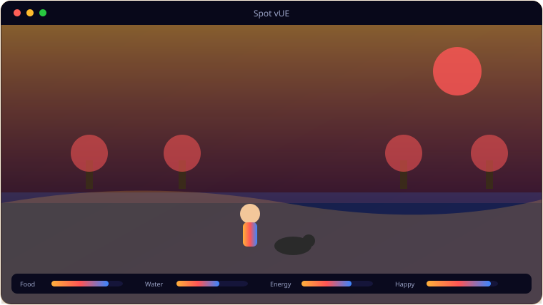

A look inside Spot vUE.

Everything Spot vUE brings to the table.
Runtime City World
A C++ world builder assembles the entire city at runtime — house and garden, main road, pavements, lamp posts, a park and a pond.
Skeletal-Mesh Spot
Spot is a real skeletal mesh (ShibaInu/Husky/Wolf/Fox by breed) driven by an anim instance for idle, walk, run and jump.
Traffic & Pedestrians
Kenney vehicles drive the lanes while Quaternius skeletal NPCs walk the pavements.
Ball, Frisbee & Fetch
Throw a physics ball or a ballistic frisbee and Spot fetches; pet him, praise him, bin his waste.
Day/Night City
Lamp posts light up on a day/night cycle across a city of modular buildings and skyscrapers.
3,000+ Assets
Animals, NPCs, trees, modular buildings, a roads kit and mini-characters — all imported and wired to C++.
System requirements.
Minimum
- OS: Windows 10 (64-bit) or Windows 11
- CPU: Quad-core, 3.0 GHz
- Memory: 8 GB RAM
- Graphics: Dedicated GPU, 2 GB VRAM (OpenGL 3.3 / DX11)
- Storage: 2 GB+ for the game and assets
- Display: 1280×720 or higher
- Graphics: DirectX 12 GPU, 4 GB VRAM
Recommended
- OS: Windows 11 (64-bit)
- CPU: 6–8 core, 3.5 GHz or better
- Memory: 16 GB RAM
- Graphics: GTX 1660 / RX 580 or better, 6 GB+ VRAM
- Storage: NVMe SSD with several GB free
- Display: 1920×1080, 60 Hz+
- Graphics: RTX 2060 / RX 5700 or better, 8 GB VRAM
Spot vUE is a packaged Unreal Engine 5 game — it's the heaviest title in the catalogue and wants a dedicated GPU.
The details.
| Engine | Unreal Engine 5.7.4, C++ gameplay |
| World | Runtime-built city — house, roads, park, traffic, pedestrians |
| Spot | Skeletal mesh per breed + anim instance |
| Controls | WASD + mouse, run/jump, fetch (ball/frisbee), Spot commands |
| Platform | Windows 10 / 11 (packaged build) |
Get Spot vUE.
A GTA-style open city dog-walk in Unreal Engine 5.
⬇ Download Spot vUESpotVUE packaged game · free · Windows 10/11